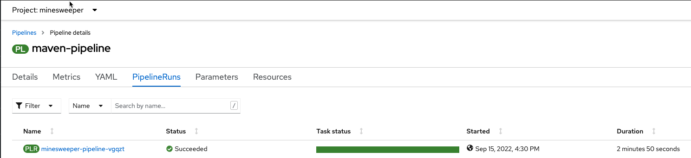
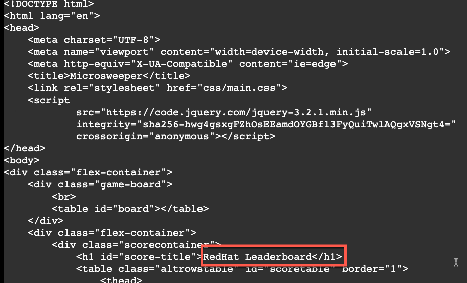
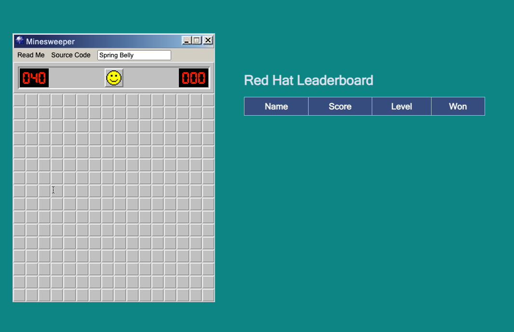

Automate deploying the application with OpenShift Pipelines ( Part 3 )#
We will be using OpenShift Pipelines which is based on the Open Source Tekton project to automatically deploy our application using a CI/CD pipeline.
If you would like to read more about OpenShift Pipelines, click here
The first thing you need to do is fork the code repositories so that you can make changes to the code base and then OpenShift pipelines will build and deploy the new code.
Opening your browser, go to the following github repos https://github.com/rh-mobb/common-java-dependencies https://github.com/rh-mobb/aro-hackaton-app
For each of the repositories, click Fork and then choose your own Git Account.
Clone git repos
Next, we will need to make a directory and clone your personal github repository that you just forked to.
mkdir $USERID
cd $USERID
git clone https://github.com/<YOUR GITHUB USER ID>/common-java-dependencies
git clone https://github.com/kmcolli/aro-hackaton-app
Review OpenShift Pipeline Tasks The next thing we need to do is import common Tekton tasks that our pipeline will use. These common tasks are designed to be reused across multiple pipelines.
Let's start by taking a look at the reusable Tasks that we will be using. From your cloud shell, change directorys to ~/aro-hackaton-app/pipeline and list the files.
Expected output:
-
1-git-clone.yaml
Clones a given GitHub Repo. -
2-mvn.yaml
This Task can be used to run a Maven build -
3-mvn-build-image.yaml
Packages source with maven builds and into a container image, then pushes it to a container registry. Builds source into a container image using Project Atomic's Buildah build tool. It uses Buildah's support for building from Dockerfiles, using its buildah bud command.This command executes the directives in the Dockerfile to assemble a container image, then pushes that image to a container registry. -
4-apply-manifest.yaml
Applied manifest files to the cluster -
5-update-deployment.yaml
Updates a deployment with the new container image.
From the Cloud Shell, we need to apply all of these tasks to our cluster. Run the following command:
expected output:
Configure Azure Container Registry
Next, we need to create a secret to push and pull images into Azure Container Registry. Each attendee has their own Azure Container Registry service assigned to them, with the naming convention
ACRPWD=$(az acr credential show -n ${USERID}acr -g $ARORG --query 'passwords[0].value' -o tsv)
oc create secret docker-registry --docker-server=${USERID}acr.azurecr.io --docker-username=${USERID}acr --docker-password=$ACRPWD --docker-email=unused acr-secret
Configure the pipleine service account Create the pipeline service account and permissions that the pipeline tasks will run under:
Expected output:
Link the acr-secret you just created to it can mount and pull images
Make sure the secret is linked to the pipeline service account.
expected output:
We also need to give the pipeline permission for certain security context constraints to that it can execute.
oc adm policy add-scc-to-user anyuid -z pipeline
oc adm policy add-scc-to-user privileged -z pipeline
Create a PVC that the pipeline will use to store the build images\
Review the Pipeline Definition Next we need to create the pipeline definition. Before we actually create the pipeline, lets take a look at the pipeline definition.
Open a browser to the git repo to browse the pipeline.yaml file.
https://github.com/rh-mobb/aro-hackaton-app/blob/main/pipeline/3-pipeline.yaml
Browse through the file and notice all the tasks that are being executed. These are the tasks we imported in the previous step. The pipeline definition simply says which order the tasks are run and what parameters should be passed between tasks.
Update Application Settings Now that we have the source code forked, we need to copy the properties file we created earlier to our new code base. Let's create a new directory, clone the repo and copy the file.
Using the cloud shell, run the following commands.
cd ~/$USERID
cp ../aro-hackaton-app/src/main/resources/application.properties aro-hackaton-app/src/main/resources/application.properties
Setup git and push changes to the properties file
git config --global user.email "<your github email>"
git config --global user.name “<your github username>”
git init
Commit changes to git
Info
when prompted log in with your git user name ( email ) and git token. If you need a git token, please refer to this document
Create git secret
While you have your github userid and secret handy, let's also create a secret containing your github credentials that we will need later. First set git envrionment variables and then run a script to create the secret.
export GIT_USER=<your git email>
export GIT_TOKEN=<your git token>
~/aro-hackaton-app/pipeline/0-github-secret.sh
Create the pipeline definition on your cluster
Update the deployment to use ACR Finally we will create a pipeline run that will execute the pipeline, which will pull code from the your git repo that you forked, will build the image and deploy it to OpenShift.
There are a couple settings in the pipeline run that we will need to update.
Before we can actually run the pipeline that will update the deployment, we need to tell the deployment to use the ACR pull secret we created in the previous step.
To do so, run the following command.
oc patch deploy/microsweeper-appservice --patch-file ~/aro-hackaton-app/pipeline/5-deployment-patch.yaml
Edit the ~/$USERID/aro-hackaton-app/pipeline/4-pipeline-run.yaml file. The three things to change is the: * dependency-git-url - to point to your personal git repository * application-git-url - to point to your personal git repository * image-name - change this to reflect to the ACR Registry created for you ... this should be $USERIDacr.azurecr.io/minesweeper
Create the pipeline run
This will start a pipeline run and redeploy the minesweeper application, but this time will build the code from your github repository and the pipeline will deploy the application as well to OpenShift.
Validate the pipeline Let's take a look at the OpenShift console to see what was created and if the application was successfully deployed.
From the OpenShift Conole - Administrator view, click on Pipelines and then Tasks.
Notice the 5 tasks that we imported and click into them to view the yaml defitions.
Next, lets look at the Pipeline. Click on Pipelines. Notice that that last run was successful. Click on maven-pipeline to view the pipeline details.
On the following screen, click on Pipeline Runs to view the status of each Pipeline Run. 
Lastely, click on the PipeRun name and you can see all the details and steps of the Pipeline. If your are curious, also click on logs and view the logs of the different tasks that were ran.

Event Triggering#
At this point, we can successfully build and deploy new code by manually runnning a pipeline run. But how can we configure the pipeline to run automatically when we commit code with git? We can do so with an Event Listener and a Trigger!
Let's start by looking at the resources we will be creating to create our event listener and trigger.
expected output:
Take a look at the files listed:
-
1-web-trigger-binding.yaml This TriggerBinding allows you to extract fields, such as the git repository name, git commit number, and the git repository URL in this case. To learn more about TriggerBindings, click here
-
2-web-trigger-template.yaml The TriggerTemplate specifies how the pipeline should be run. Browsing the file above, you will see there is a definition of the PipelineRun that looks exactly like the PipelineRun you create in the previous step. This is by design! ... it should be the same.
You will need to edit this file so it points to your git repository and acr image repository. Change the following entries to point to your GIT Repository.
- name: dependency-git-url
value: https://github.com/<YOUR-GITHUB-ID>/common-java-dependencies
- name: application-git-url
value: https://github.com/<YOUR-GITHUB-ID>/aro-hackaton-app
Note
As a reminder, each attendee has their own Azure Container Registry service assigned to them, with the naming convention
To learn more about TriggerTemplates, click here
- 3-web-trigger.yaml The next file we have is the Trigger. The Trigger specifies what should happen when the EventListener detects an Event. Looking at this file, you will see that we are looking for 'Push' events that will create an instance of the TriggerTemplate that we just created. This in turn will start the PipelineRun.
To learn more about Triggers, click here
- 4-event-listenter.yaml The last file we have is the Event Listener. An EventListener is a Kubernetes object that listens for events at a specified port on your OpenShift cluster. It exposes an OpenShift Route that receives incoming event and specifies one or more Triggers.
To learn more about EventListeners, click here
Now that you have reviewed all the files, let's apply them to our cluster.
Before we test out our EventListener and Trigger, lets review what was created in OpenShift.
From the OpenShift console, under Pipelines, click on Triggers.
Browse the EventListener, TriggerTemplate and TriggerBindings that you just created.

The next thing we need to do, is connect our EventListener with Git. When an action, such as a git push, happens, git will need to call our EventListner to start the build and deploy process.
The first thing we need to do is exposing our EventListner service.
From the Cloud Shell, let's start by looking at the event listener service.
expected output:
Expose the service so that Git is able to connect to the event listener.
Note
Since this is public cluster, we can simply use the included OpenShift Ingress Controller as it is exposed to the Internet. For a private cluster, you can follow the same process as we did above in exposing the minesweeper application with Front Door!
To get the url of the Event Listener Route that we just created, run the following command:
expected output:
The last step we need to do, is configure git to call this event listner URL when events occur.
From your browser, go to your personal GitHub aro-hackaton-app repository, and click on Settings.

On the next screen, click on webhooks.
Click on add webhook

On the next screen, enter the following settings:
- PayloadURL - enter http://
Where does this secret value come from? Refer to the ~/$USERID/aro-hackaton-app/pipeline/tasks/event-listener/web-trigger.yaml file.
You will see the following snippet that contains the secret to access git.
interceptors:
- ref:
name: "github"
params:
- name: "secretRef"
value:
secretName: gitsecret
secretKey: secretToken
- name: "eventTypes"
value: ["push"]
The secret you enter here for the git webhook, needs to match the value for the secretToken key of the a secret named gitsecret. If you remember in the previous step, we create this secret and used your git token as this value.
Keep the remaining defaults, and click Add webhook
Test it out!!#
Now that we have our trigger, eventlistener and git webhook setup, lets test it out.
Make sure you are in the directory for your personal git repo where the application is, and edit the /src/main/resources/META-INF/resources/index.html file.
Search for Leaderboard and change it to \<YOUR NAME> Leaderboard.

Now commit and push the change
Pushing the change to the your git repository will kick of the event listener which will start the pipeline.
As a bonus, if you want to look at the logs of the event listener, you can use the tekton (tkn) cli.

Quickly switch over to your OpenShift Console, and watch the pipeline run.

Once the pipeline finishes, check out the change.
From the OpenShift Console, click on Networking and the Routes.

and drum roll ... you should see the updated application with a new title for the leaderboard. 